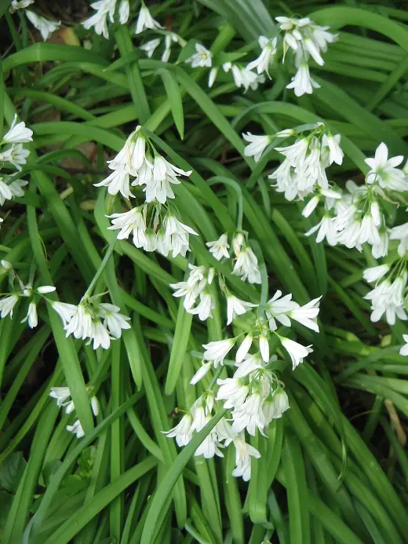

Three-cornered leek
Three-cornered leek is a wild green you can forage from June to October in Temperate south-east, Tasmania and South-west. Invasive patches of soft, keeled leaves; a triangular flower stem carries white drooping bells striped green. Smells of onion.

When is three-cornered leek in season in Australia?
Three-cornered leek is usually in season June to October. Timing shifts with weather, latitude and altitude.
Where does three-cornered leek grow in Australia?
Three-cornered leek grows in Australian Capital Territory, New South Wales, South Australia, Tasmania, Victoria, Western Australia. Regions: Temperate south-east, Tasmania, South-west.
How do you recognise three-cornered leek?
Invasive patches of soft, keeled leaves; a triangular flower stem carries white drooping bells striped green. Smells of onion.
How do you harvest three-cornered leek?
Pull whole invasive plants freely, or snip leaves like chives.
How do you eat three-cornered leek?
Like spring onions or chives; flowers in salads.
How do you store three-cornered leek?
Freeze chopped.
What is three-cornered leek good for?
Vitamin C.